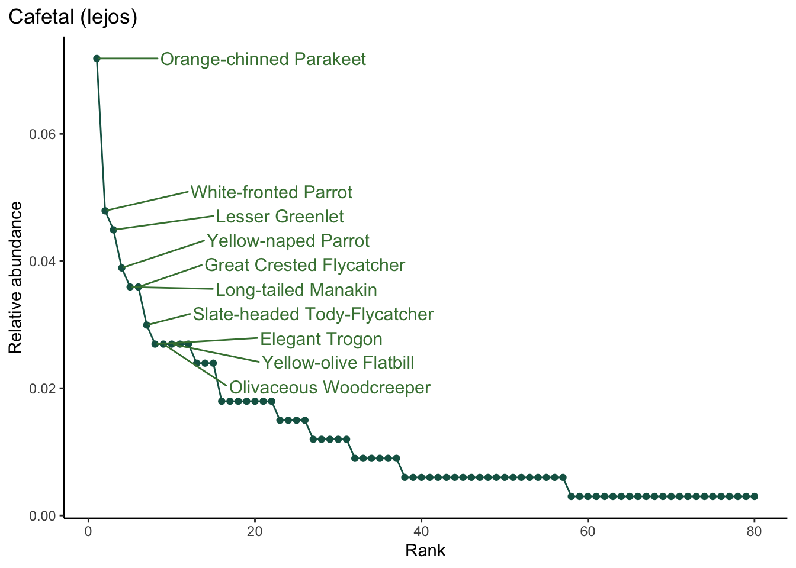

library(tidyverse) # general manipulationlibrary(here) # organizing directorieslibrary(janitor) # cleaning column nameslibrary(readxl) # using the xlsx filelibrary(tanagR) # color palettes inspired by members of the Thraupidae familylibrary(ggrepel) # labelling plotslibrary(patchwork) # putting plots togetherobserved_totals <-readRDS(here("data", "compiling", "2023", "CRSR", "observed_totals.RDS"))
2. Rank abundance with totals
a. Across routes
Code
rank_df <- observed_totals %>%# replace NAs with 0replace(is.na(.), 0) %>%select(nombre_en_ingles, total) %>%# calculate relative abundancemutate(rel_abund = total/sum(total)) %>%# create a new column for rankarrange(-rel_abund) %>%mutate(rank =seq(from =1, to =length(total), by =1)) %>%# create a column for labellingmutate(label =case_when( rank <11~"yes",TRUE~"no" ))sr_rank_abundance <-ggplot(data = rank_df, aes(x = rank, y = rel_abund)) +geom_line(color ="#146152") +geom_point(color ="#146152") +labs(x ="Rank", y ="Relative abundance") +theme_classic() +theme(plot.title.position ="plot") +geom_text_repel(data = rank_df %>%filter(label =="yes"),aes(label = nombre_en_ingles), force_pull =0.1, direction ="y", nudge_x =40, size =4, col ="#44803F") +labs(title ="Santa Rosa rank abundance")sr_rank_abundance
b. Within routes
Code
rank_route_fxn <-function(route_name) { df <- observed_totals %>%select(-total) %>%pivot_longer(cols = aguacaliente:sr_siempre_verde, names_to ="route", values_to ="count") %>%filter(route == {{ route_name }}) %>%# calculate relative abundancemutate(rel_abund = count/sum(count, na.rm =TRUE)) %>%# drop species that weren't seen on some routesdrop_na(rel_abund) %>%# create a new column for rankarrange(-rel_abund) %>%mutate(rank =seq(from =1, to =length(count), by =1)) %>%# create a column for labellingmutate(label =case_when( rank <11~"yes",TRUE~"no" )) title <-if(route_name =="campo_aterrizaje_interamericana") {"Campo Aterrizaje Interamericana" } elseif(route_name =="cafetal_lejos") {"Cafetal (lejos)" } elseif(route_name =="cafetal_arriba") {"Cafetal (arriba)" } elseif(route_name =="sr_siempre_verde") {"SR Siempre Verde" } elseif(route_name =="argelia") {"Argelia" } elseif (route_name =="murcielago_parcelas") {"Murcielago Parcelas" } elseif (route_name =="junquillal") {"Junquillal" } elseif(route_name =="casona") {"Casona" } elseif(route_name =="estero_real") {"Estero Real" } elseif(route_name =="aguacaliente") {"Aguacaliente" } elseif(route_name =="nancite") {"Nancite" } elseif(route_name =="sr_area_admin") {"SR Area Admin" } elseif(route_name =="laguna_escondida") {"Laguna Escondida" } else {warning("Whoops! You might have entered an incorrect route name. Double check your arguments!") }ggplot(data = df, aes(x = rank, y = rel_abund)) +geom_line(color ="#146152") +geom_point(color ="#146152") +labs(x ="Rank", y ="Relative abundance") +theme_classic() +theme(plot.title.position ="plot") +geom_text_repel(data = df %>%filter(label =="yes"),aes(label = nombre_en_ingles), force_pull =0.1, direction ="y", nudge_x =20, size =4, col ="#44803F") +labs(title = title) }rank_route_fxn("aguacaliente")
Code
rank_route_fxn("cafetal_lejos")

Code
rank_route_fxn("sr_siempre_verde")
3. Species comparisons across routes
Code
number_df <-colSums(!is.na(observed_totals)) %>%enframe() %>%rename(site = name, total = value) %>%filter(!site %in%c("nombre_en_ingles", "total")) %>%mutate(site_name =case_when( site =="campo_aterrizaje_interamericana"~"Campo Aterrizaje Interamericana", site =="cafetal_lejos"~"Cafetal (lejos)", site =="cafetal_arriba"~"Cafetal (arriba)", site =="sr_siempre_verde"~"SR Siempre Verde", site =="argelia"~"Argelia", site =="murcielago_parcelas"~"Murcielago Parcelas", site =="junquillal"~"Junquillal", site =="casona"~"Casona", site =="estero_real"~"Estero Real", site =="aguacaliente"~"Aguacaliente", site =="nancite"~"Nancite", site =="sr_area_admin"~"SR Area Admin", site =="laguna_escondida"~"Laguna Escondida" )) %>%arrange(total) %>%mutate(site_name =fct_inorder(site_name))number_plot <-ggplot(data = number_df, aes(x = total, y =reorder(site_name, total))) +geom_segment(aes(x =0, xend = total, yend = site_name, color = site_name), linewidth =1) +geom_point(aes(color = site_name), size =2.5) +geom_text(aes(label = total), nudge_x =max(number_df$total*0.05), size =4.5) +scale_x_continuous(expand =c(0, 0), limits =c(0, max(number_df$total*1.1)),position ="top") +scale_color_manual(values =tanagr_palette("cyanerpes_cyaneus", n =13, discrete =FALSE)) +labs(x ="Total species", y ="") +theme_bw() +theme(legend.position ="none",axis.title =element_text(size =14),title =element_text(size =12),axis.ticks =element_blank(),axis.text =element_text(size =12),axis.text.x =element_blank(),axis.title.x =element_text(hjust =0),plot.title.position ="plot",panel.border =element_blank(),panel.grid =element_blank(),plot.margin =unit(c(0.01, 0.01, 0.01, 0.01), units ="cm"))number_plot